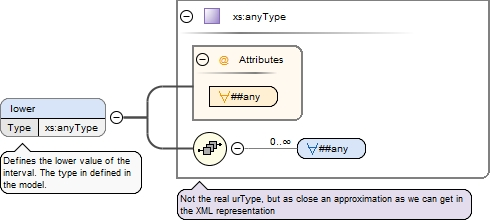

Defines the lower value of the interval. The type in defined in the model.
Diagram

Properties
minOccurs
0
maxOccurs
1
Source
<xs:element maxOccurs="1" minOccurs="0" name="lower" type="xs:anyType"><xs:annotation><xs:documentation xml:lang="en-us">Defines the lower value of the interval. The type in defined in the model.</xs:documentation><xs:appinfo><rdf:Description rdf:about="https://www.s3model.com/ns/s3m/s3model_3_1_0.xsd#XdIntervalType/lower"><rdfs:domain rdf:resource="https://www.s3model.com/ns/s3m/s3model_3_1_0.xsd#XdIntervalType"/><rdfs:range rdf:resource="https://www.s3model.com/ns/s3m/s3model_3_1_0.xsd#InvlType"/><rdfs:label xml:lang="en-us">lower</rdfs:label><rdf:type rdf:resource="https://www.s3model.com/ns/s3m/s3model_3_1_0.xsd#InvlType"/><rdfs:comment xml:lang="en-us">Defines the lower value of the interval. The type in defined in the model.</rdfs:comment></rdf:Description></xs:appinfo></xs:annotation></xs:element>
Defines the upper value of the interval. The type in defined in the model.
Diagram
Properties
minOccurs
0
maxOccurs
1
Source
<xs:element maxOccurs="1" minOccurs="0" name="upper" type="xs:anyType"><xs:annotation><xs:documentation xml:lang="en-us">Defines the upper value of the interval. The type in defined in the model.</xs:documentation><xs:appinfo><rdf:Description rdf:about="https://www.s3model.com/ns/s3m/s3model_3_1_0.xsd#XdIntervalType/upper"><rdfs:domain rdf:resource="https://www.s3model.com/ns/s3m/s3model_3_1_0.xsd#XdIntervalType"/><rdfs:range rdf:resource="https://www.s3model.com/ns/s3m/s3model_3_1_0.xsd#InvlType"/><rdfs:label xml:lang="en-us">upper</rdfs:label><rdf:type rdf:resource="https://www.s3model.com/ns/s3m/s3model_3_1_0.xsd#InvlType"/><rdfs:comment xml:lang="en-us">Defines the upper value of the interval. The type in defined in the model.</rdfs:comment></rdf:Description></xs:appinfo></xs:annotation></xs:element>
<xs:element maxOccurs="1" minOccurs="1" name="lower-included" type="xs:boolean" default="true"><xs:annotation><xs:documentation xml:lang="en-us">Is the lower value of the interval inclusive?</xs:documentation><xs:appinfo><rdf:Description rdf:about="https://www.s3model.com/ns/s3m/s3model_3_1_0.xsd#XdIntervalType/lower-included"><rdfs:domain rdf:resource="https://www.s3model.com/ns/s3m/s3model_3_1_0.xsd#XdIntervalType"/><rdfs:range rdf:resource="http://www.w3.org/2001/XMLSchema#boolean"/><rdfs:label xml:lang="en-us">lower-included</rdfs:label><rdf:type rdf:resource="http://www.w3.org/2001/XMLSchema#boolean"/><rdfs:comment xml:lang="en-us">Is the lower value of the interval inclusive?</rdfs:comment></rdf:Description></xs:appinfo></xs:annotation></xs:element>
<xs:element maxOccurs="1" minOccurs="1" name="upper-included" type="xs:boolean" default="true"><xs:annotation><xs:documentation xml:lang="en-us">Is the upper value of the interval inclusive?</xs:documentation><xs:appinfo><rdf:Description rdf:about="https://www.s3model.com/ns/s3m/s3model_3_1_0.xsd#XdIntervalType/upper-included"><rdfs:domain rdf:resource="https://www.s3model.com/ns/s3m/s3model_3_1_0.xsd#XdIntervalType"/><rdfs:range rdf:resource="http://www.w3.org/2001/XMLSchema#boolean"/><rdfs:label xml:lang="en-us">upper-included</rdfs:label><rdf:type rdf:resource="http://www.w3.org/2001/XMLSchema#boolean"/><rdfs:comment xml:lang="en-us">Is the upper value of the interval inclusive?</rdfs:comment></rdf:Description></xs:appinfo></xs:annotation></xs:element>
<xs:element maxOccurs="1" minOccurs="1" name="lower-bounded" type="xs:boolean" default="true"><xs:annotation><xs:documentation xml:lang="en-us">Is the lower value of the interval bounded?</xs:documentation><xs:appinfo><rdf:Description rdf:about="https://www.s3model.com/ns/s3m/s3model_3_1_0.xsd#XdIntervalType/lower-bounded"><rdfs:domain rdf:resource="https://www.s3model.com/ns/s3m/s3model_3_1_0.xsd#XdIntervalType"/><rdfs:range rdf:resource="http://www.w3.org/2001/XMLSchema#boolean"/><rdfs:label xml:lang="en-us">lower-bounded</rdfs:label><rdf:type rdf:resource="http://www.w3.org/2001/XMLSchema#boolean"/><rdfs:comment xml:lang="en-us">Is the lower value of the interval bounded?</rdfs:comment></rdf:Description></xs:appinfo></xs:annotation></xs:element>
<xs:element maxOccurs="1" minOccurs="1" name="upper-bounded" type="xs:boolean" default="true"><xs:annotation><xs:documentation xml:lang="en-us">Is the upper value of the interval bounded?</xs:documentation><xs:appinfo><rdf:Description rdf:about="https://www.s3model.com/ns/s3m/s3model_3_1_0.xsd#XdIntervalType/upper-bounded"><rdfs:domain rdf:resource="https://www.s3model.com/ns/s3m/s3model_3_1_0.xsd#XdIntervalType"/><rdfs:range rdf:resource="http://www.w3.org/2001/XMLSchema#boolean"/><rdfs:label xml:lang="en-us">upper-bounded</rdfs:label><rdf:type rdf:resource="http://www.w3.org/2001/XMLSchema#boolean"/><rdfs:comment xml:lang="en-us">Is the upper value of the interval bounded?</rdfs:comment></rdf:Description></xs:appinfo></xs:annotation></xs:element>
<xs:element maxOccurs="1" minOccurs="0" name="interval-units" type="s3m:InvlUnits"><xs:annotation><xs:documentation xml:lang="en-us">Defines an optional units for this Interval.</xs:documentation><xs:appinfo><rdf:Description rdf:about="https://www.s3model.com/ns/s3m/s3model_3_1_0.xsd#XdIntervalType/interval-units"><rdfs:domain rdf:resource="https://www.s3model.com/ns/s3m/s3model_3_1_0.xsd#XdIntervalType"/><rdfs:range rdf:resource="https://www.s3model.com/ns/s3m/s3model_3_1_0.xsd#IntervalUnits"/><rdfs:label xml:lang="en-us">interval-units</rdfs:label><rdf:type rdf:resource="https://www.s3model.com/ns/s3m/s3model_3_1_0.xsd#IntervalUnits"/><rdfs:comment xml:lang="en-us">Defines an optional units for this Interval.</rdfs:comment></rdf:Description></xs:appinfo></xs:annotation></xs:element>
Complex Type s3m:XdIntervalType
Namespace
https://www.s3model.com/ns/s3m/
Annotations
Generic type defining an interval (i.e. range) of comparable types. An interval is a contiguous subrange of a comparable base type. Used to define intervals of dates, times, quantities, etc. Whose datatypes are the same and are ordered. In S3Model, they areprimarily used in defining reference ranges.
<xs:complexType name="XdIntervalType"><xs:annotation><xs:documentation xml:lang="en-us">Generic type defining an interval (i.e. range) of comparable types. An interval is a contiguous subrange of a comparable base type. Used to define intervals of dates, times, quantities, etc. Whose datatypes are the same and are ordered. In S3Model, they are primarily used in defining reference ranges.</xs:documentation><xs:appinfo><rdf:Description rdf:about="https://www.s3model.com/ns/s3m/s3model_3_1_0.xsd#XdIntervalType"><rdfs:isDefinedBy rdf:resource="https://www.s3model.com/docs/3_1_0/s3model_3_1_0_xsd_Complex_Type_s3m_XdIntervalType.html#XdIntervalType"/><rdfs:subClassOf rdf:resource="https://www.s3model.com/ns/s3m/s3model_3_1_0.xsd#XdAnyType"/><rdfs:label xml:lang="en-us">XdIntervalType</rdfs:label><rdf:type rdf:resource="https://www.s3model.com/ns/s3m/s3model/CMC"/><rdfs:comment xml:lang="en-us">Generic type defining an interval (i.e. range) of comparable types. An interval is a contiguous subrange of a comparable base type. Used to define intervals of dates, times, quantities, etc. Whose datatypes are the same and are ordered. In S3Model, they are primarily used in defining reference ranges.</rdfs:comment></rdf:Description></xs:appinfo></xs:annotation><xs:complexContent><xs:extension base="s3m:XdAnyType"><xs:sequence><xs:element maxOccurs="1" minOccurs="0" name="lower" type="xs:anyType"><xs:annotation><xs:documentation xml:lang="en-us">Defines the lower value of the interval. The type in defined in the model.</xs:documentation><xs:appinfo><rdf:Description rdf:about="https://www.s3model.com/ns/s3m/s3model_3_1_0.xsd#XdIntervalType/lower"><rdfs:domain rdf:resource="https://www.s3model.com/ns/s3m/s3model_3_1_0.xsd#XdIntervalType"/><rdfs:range rdf:resource="https://www.s3model.com/ns/s3m/s3model_3_1_0.xsd#InvlType"/><rdfs:label xml:lang="en-us">lower</rdfs:label><rdf:type rdf:resource="https://www.s3model.com/ns/s3m/s3model_3_1_0.xsd#InvlType"/><rdfs:comment xml:lang="en-us">Defines the lower value of the interval. The type in defined in the model.</rdfs:comment></rdf:Description></xs:appinfo></xs:annotation></xs:element><xs:element maxOccurs="1" minOccurs="0" name="upper" type="xs:anyType"><xs:annotation><xs:documentation xml:lang="en-us">Defines the upper value of the interval. The type in defined in the model.</xs:documentation><xs:appinfo><rdf:Description rdf:about="https://www.s3model.com/ns/s3m/s3model_3_1_0.xsd#XdIntervalType/upper"><rdfs:domain rdf:resource="https://www.s3model.com/ns/s3m/s3model_3_1_0.xsd#XdIntervalType"/><rdfs:range rdf:resource="https://www.s3model.com/ns/s3m/s3model_3_1_0.xsd#InvlType"/><rdfs:label xml:lang="en-us">upper</rdfs:label><rdf:type rdf:resource="https://www.s3model.com/ns/s3m/s3model_3_1_0.xsd#InvlType"/><rdfs:comment xml:lang="en-us">Defines the upper value of the interval. The type in defined in the model.</rdfs:comment></rdf:Description></xs:appinfo></xs:annotation></xs:element><xs:element maxOccurs="1" minOccurs="1" name="lower-included" type="xs:boolean" default="true"><xs:annotation><xs:documentation xml:lang="en-us">Is the lower value of the interval inclusive?</xs:documentation><xs:appinfo><rdf:Description rdf:about="https://www.s3model.com/ns/s3m/s3model_3_1_0.xsd#XdIntervalType/lower-included"><rdfs:domain rdf:resource="https://www.s3model.com/ns/s3m/s3model_3_1_0.xsd#XdIntervalType"/><rdfs:range rdf:resource="http://www.w3.org/2001/XMLSchema#boolean"/><rdfs:label xml:lang="en-us">lower-included</rdfs:label><rdf:type rdf:resource="http://www.w3.org/2001/XMLSchema#boolean"/><rdfs:comment xml:lang="en-us">Is the lower value of the interval inclusive?</rdfs:comment></rdf:Description></xs:appinfo></xs:annotation></xs:element><xs:element maxOccurs="1" minOccurs="1" name="upper-included" type="xs:boolean" default="true"><xs:annotation><xs:documentation xml:lang="en-us">Is the upper value of the interval inclusive?</xs:documentation><xs:appinfo><rdf:Description rdf:about="https://www.s3model.com/ns/s3m/s3model_3_1_0.xsd#XdIntervalType/upper-included"><rdfs:domain rdf:resource="https://www.s3model.com/ns/s3m/s3model_3_1_0.xsd#XdIntervalType"/><rdfs:range rdf:resource="http://www.w3.org/2001/XMLSchema#boolean"/><rdfs:label xml:lang="en-us">upper-included</rdfs:label><rdf:type rdf:resource="http://www.w3.org/2001/XMLSchema#boolean"/><rdfs:comment xml:lang="en-us">Is the upper value of the interval inclusive?</rdfs:comment></rdf:Description></xs:appinfo></xs:annotation></xs:element><xs:element maxOccurs="1" minOccurs="1" name="lower-bounded" type="xs:boolean" default="true"><xs:annotation><xs:documentation xml:lang="en-us">Is the lower value of the interval bounded?</xs:documentation><xs:appinfo><rdf:Description rdf:about="https://www.s3model.com/ns/s3m/s3model_3_1_0.xsd#XdIntervalType/lower-bounded"><rdfs:domain rdf:resource="https://www.s3model.com/ns/s3m/s3model_3_1_0.xsd#XdIntervalType"/><rdfs:range rdf:resource="http://www.w3.org/2001/XMLSchema#boolean"/><rdfs:label xml:lang="en-us">lower-bounded</rdfs:label><rdf:type rdf:resource="http://www.w3.org/2001/XMLSchema#boolean"/><rdfs:comment xml:lang="en-us">Is the lower value of the interval bounded?</rdfs:comment></rdf:Description></xs:appinfo></xs:annotation></xs:element><xs:element maxOccurs="1" minOccurs="1" name="upper-bounded" type="xs:boolean" default="true"><xs:annotation><xs:documentation xml:lang="en-us">Is the upper value of the interval bounded?</xs:documentation><xs:appinfo><rdf:Description rdf:about="https://www.s3model.com/ns/s3m/s3model_3_1_0.xsd#XdIntervalType/upper-bounded"><rdfs:domain rdf:resource="https://www.s3model.com/ns/s3m/s3model_3_1_0.xsd#XdIntervalType"/><rdfs:range rdf:resource="http://www.w3.org/2001/XMLSchema#boolean"/><rdfs:label xml:lang="en-us">upper-bounded</rdfs:label><rdf:type rdf:resource="http://www.w3.org/2001/XMLSchema#boolean"/><rdfs:comment xml:lang="en-us">Is the upper value of the interval bounded?</rdfs:comment></rdf:Description></xs:appinfo></xs:annotation></xs:element><xs:element maxOccurs="1" minOccurs="0" name="interval-units" type="s3m:InvlUnits"><xs:annotation><xs:documentation xml:lang="en-us">Defines an optional units for this Interval.</xs:documentation><xs:appinfo><rdf:Description rdf:about="https://www.s3model.com/ns/s3m/s3model_3_1_0.xsd#XdIntervalType/interval-units"><rdfs:domain rdf:resource="https://www.s3model.com/ns/s3m/s3model_3_1_0.xsd#XdIntervalType"/><rdfs:range rdf:resource="https://www.s3model.com/ns/s3m/s3model_3_1_0.xsd#IntervalUnits"/><rdfs:label xml:lang="en-us">interval-units</rdfs:label><rdf:type rdf:resource="https://www.s3model.com/ns/s3m/s3model_3_1_0.xsd#IntervalUnits"/><rdfs:comment xml:lang="en-us">Defines an optional units for this Interval.</rdfs:comment></rdf:Description></xs:appinfo></xs:annotation></xs:element></xs:sequence></xs:extension></xs:complexContent></xs:complexType>